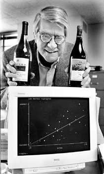

For Princeton University economics professor Orley Ashenfelter, finding a good bottle of wine is as easy as – 12.145 + 0.00117*winter rainfall + 0.0614*average growing season temperature – 0.00386*harvest rainfall. Professor Ashenfelter is a highly respected scholar and a highly controversial wine enthusiast who serves as the managing editor of The American Economics Review and publishes of a wine newsletter called Liquid Assets. His formula, which has been antagonizing the entire wine industry for more than a decade, combines his work with his hobby by using the tools of economics to create a highly accurate wine rating system. The wine enterprise has fascinated Dr. Ashenfelter since his days as a visiting economics professor at Bristol, a historic English port. He cites the writings of Edmund Penning Roswell as an inspiration for his use of weather data to compute wine ratings. A rational, bespectacled man, Dr. Ashenfelter decries what he perceives to be a sense of elitism in the wine industry. "People who think they know a lot don't always know a lot," he said. Most wine experts rely on "tasting" wine to predict how well a certain vintage will age. But Dr. Ashenfelter is highly dubious about this method. "Writers whose palates we respect act as if they were able to pick out the qualities in young wines that will emerge a decade or more from now," he said. Dr. Ashenfelter does not rely on the opinions of wine tasters to predict future quality and auction prices. Instead, he uses a formula based strictly on two variables: temperature and rainfall. Utilizing years of weather data, he has concluded that dry, warm weather produces the best wines. With just numbers and a computer, he has obtained remarkable precision in predicting how vintages will do. "Predicting the quality and price of a wine could be like predicting any other market item," the professor said. "All you need is the right equation and the right values for your variables." Dr. Ashenfelter tested his equation by comparing the scores his equation produced for Bordeaux wine vintages from 1952 to 1980 with the auction prices they obtained. Each time, a higher score from his equation yielded a higher auction price. "The marketplace confirms it," he said. Despite the accuracy of the ratings, Dr. Ashenfelter has come up against enormous walls of criticism from traditional wine tasters and publications. Robert Parker Jr., an influential wine critic, calls the professor's methods "Neanderthal," not to mention "ludicrous and absurd." Dr. Ashenfelter brushes aside such criticisms because many of his detractors don't have a grasp of the mathematical and statistical concepts that go into his calculations. "From a technical point of view, it does work," he said. "People who know what's involved think it makes a lot of sense." Despite the strong evidence behind his ideas, Dr. Ashenfelter admits he probably will not exert a large influence on the wine industry. The newsletter he puts out with the aid of a small staff has a circulation of just under 1,000 people. "I won't have much influence on (the industry) at all," he said. "Their goal now is to ignore us." The professor, however, laments a silent type of copycat syndrome among wine writers, noting many connoisseurs agree privately with him but refuse to say so publicly. He has yet to receive support from professional wine tasters, despite the accuracy of his methods. "Everyone now says the same thing I do," he said. Years ago, many tasters criticized Dr. Ashenfelter when he announced that his data indicated the 1986 vintage would be average, despite the belief of many tasters the wine would age incredibly well. History has supported his claims. Today, many people consider the 1986 vintages to be average wines. But Dr. Ashenfelter is careful to note that his method of rating wine by weather alone is not foolproof. It serves as a sketch rather than a detailed portrait of how good a particular vintage will be, he said, noting "what it really tells you is the potential." Still, the professor has found some supporters. Despite the controversy his formula has provoked, Dr. Ashenfelter said most other economists stand staunchly behind his reasoning. "The causation between weather and prices is very clear," he said.
Copyright © 1996-99 Packet Publications, Inc.